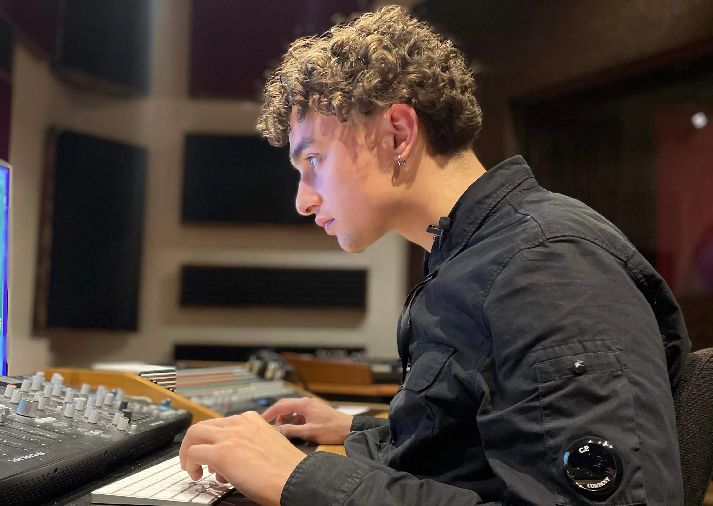
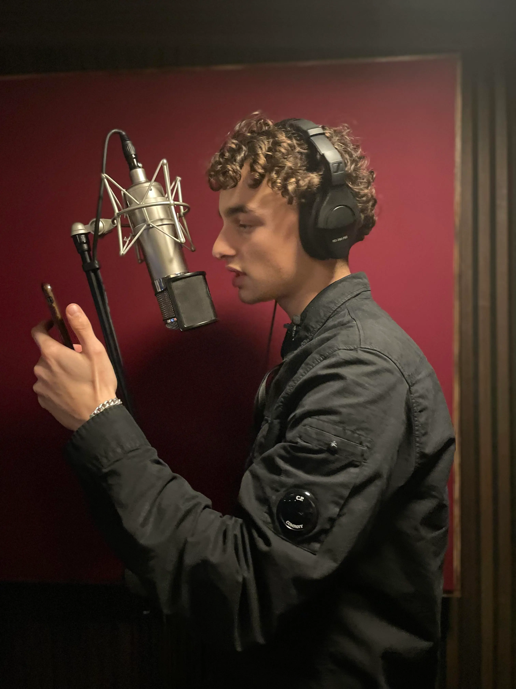
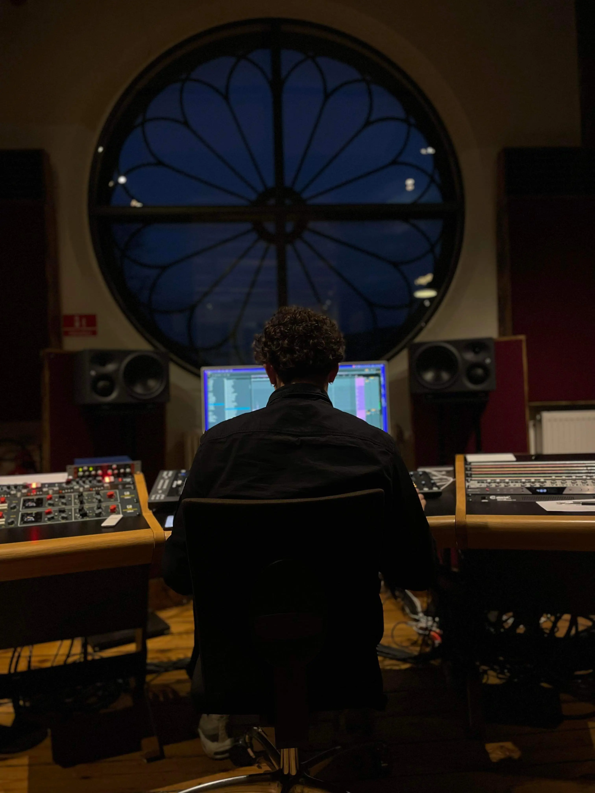
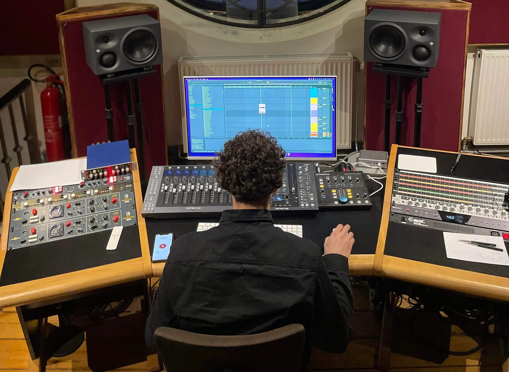

MUSIKER
Aske Dupret er 18 år gammel, og har fransk/argentinsk blod i årerne. Til dagligt går han på Rysensteen Gymnasium, men hans drøm er, at leve af sin musik og derfor bruger han mange timer i studiet.
"For mig er musik ikke bare en måde at udtrykke sig selv på, det er også en følelse i sig selv".




"Min motivation er mine drenge"
"Jeg vil gerne leve af musik, fordi mit liv er musik!"